El Flappy Bird es un juego donde el pájaro tiene que esquivar las Pipes que se van generando y moviendose hacia la izquierda
y de arriba abajo. Si las esquiva logrará puntos pero si se da con ellas le quitará vidas.
Se movera con el click del ratón hacia arriba y con la gravedad de la escena bajara.
Es el Ground que se ira generando constantemente y se movera hacia la izquierda.
Aparecerán por la derecha cada cierto tiempo en posiciones aleatorias de "Y" y subiendo y bajando un poco para que sea más dificil el juego y se moveran hacia la izquierda.
Recarga de nuevo el Juego cuando nos quedemos sin vidas.
Es una entidad que solo se mostrara cuando no quedemos sin vidas al igual que el botón Play.
Simplemente se mostrara al principio del juego junto con el Flappy Bird y cuando volvamos a empezar el juego tras perder una vida y se destruira.
Haremos conductas para todas las entidades y usaremos un nuevo bloque muy parecido al enviar de Scratch.
El juego consiste en que el Flappy Bird tiene que sobrepasar las Pipes sumando puntos e intentar no chocar con las
Pipes para que no nos quiten vidas.
Tendrá 3 vidas y cuando ya no tengamos más vidas aparecera el "Game Over" y el botón de "Play".
Pondremos sonidos de Die (quita vidas), Hit (cuando se choca con la Pipe) y Point (suma puntos).
El tamaño del juego será de:
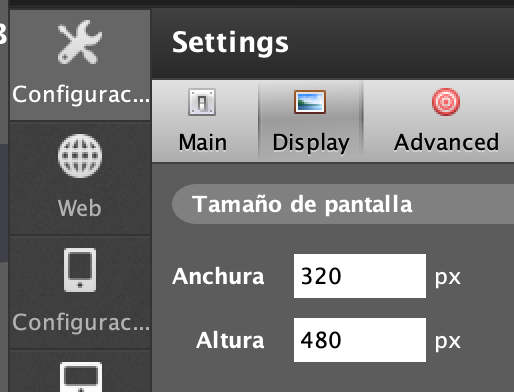
El tamaño del Escenario será Anchura 10 y Altura 15. Necesitamos crear un fondo, lo seleccionamos donde tengamos los recursos del Flappy Bird/BackGround con la escala 4.
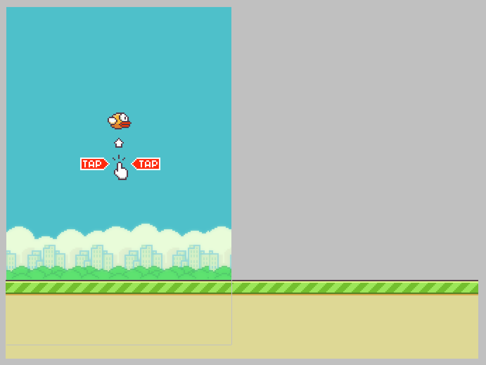
El Flappy Bird tenemos también que seleccionarlo con escala 1 pero antes de elegir la imagen tenemos que poner en Columnas 2 y Filas 2. Ya que están las animaciones en el mismo Sprite FlappyBird.png y tenemos que separarlas.
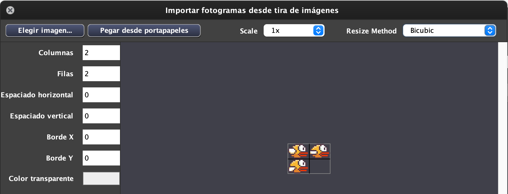
Las Instrucciones la seleccionamos pero con la escala a 1. No hace falta que tenga colisiones. Para borrarla simplemente tenemos que
entrar en la solapa de Colisiones y dar a retroceder en el teclado y desaparecera. Y en la solapa de Fisícas no se podrá mover. Y
pertenecera al grupo de las "Doodads" que no puede colisionar con nada (Ya está definida en los Grupos de Colisión).
Y nos quedaría por poner el Ground con escala 1, pero ponemos 2 entidades ya que tendremos que ir generandolo continuamente.
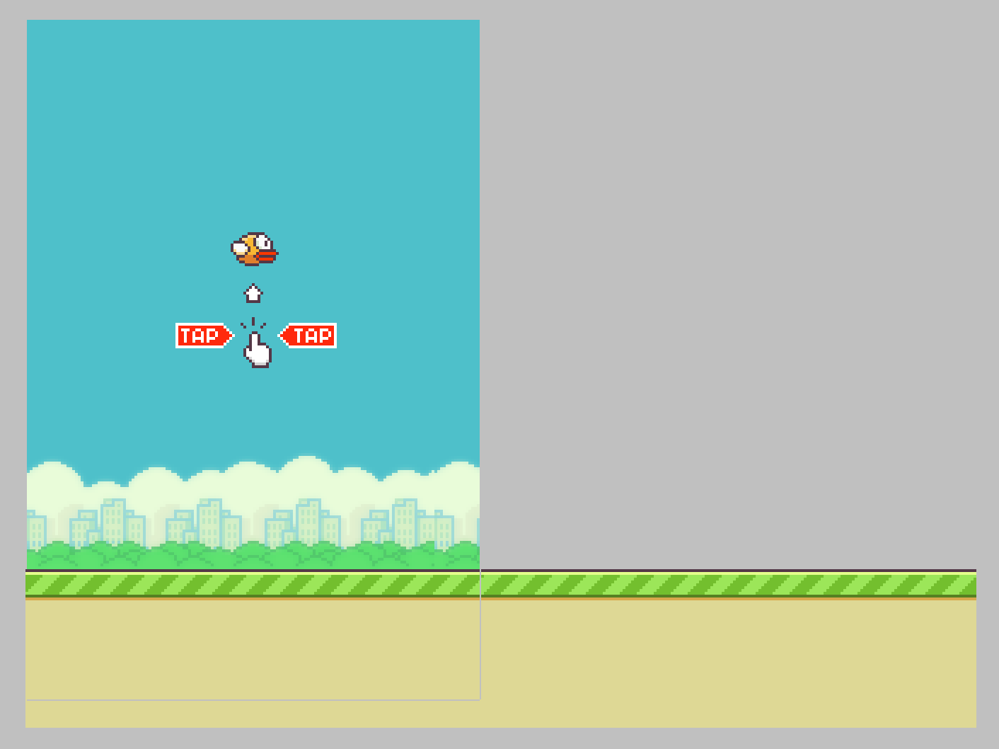
En Físicas del Escenario pondremos una gravedad vertical para que el Flappy caiga.
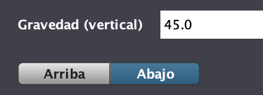
Para comenzar el juego daremos un click encima de la entidad "Intructions". Para ello crearemos una conducta llamado "InstruccionesBehaviour".
Este conducta para crearla vamos a Central Juego/CONDUCTAS/Para entidades ya que se la asignaremos a una entidad.
Está conducta simplemente tendrá un Evento de "Click" y cuando hagamos un click en cualquier parte de juego se destruira y comenzaremos a jugar.
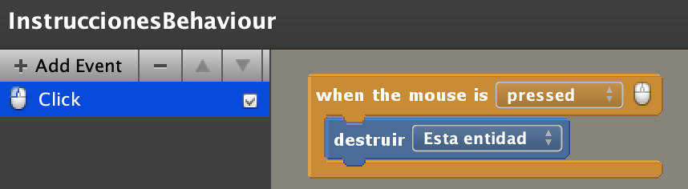
Para asignarsela a una entidad, seleccionamos la entidad y en la solapa de "Conductas" se la añadimos con el botón de "+ Añadir conducta" situado en la parte baja.
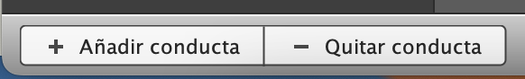
El Flappy Bird también tendrá su conducta "BirdBehaviour". Asignársela al Flappy como hicimos anteriormente.
En la conducta tendremos varios Eventos:
- Evento Created: Desactivar su gravedad y que siempre este activo.
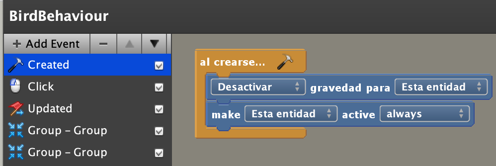
- Evento Click: Con el click que hemos dado antes en el juego se activara también este evento del Flappy para que se active la gravedad y se empiecen a generar Pipes. Todo esto lo hara siempre que el Flappy este vivo con el atributo del juego "Dead" y también necesito otro atributo "Jugando" para que active la gravedad y empiece a generar las Pipes mediante un evento que estará en la conducta de la escena.
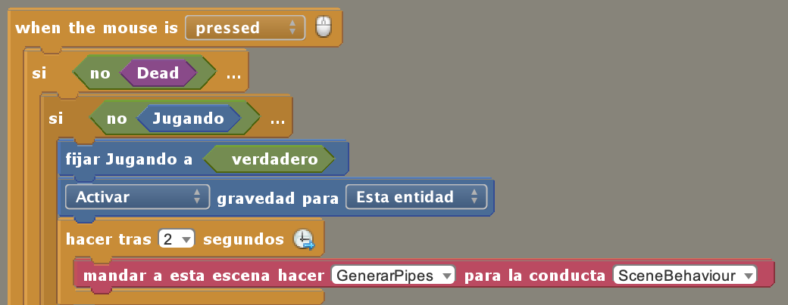
El evento de "GenerarPipes" que estárá en la conducta "SceneBehaviour" la haremos más adelante.
Necesitare también quitar el y-speed cuando sea mayor a 0. Y que el Flappy se mueva con el bloque de "presionar" con unos grados y fuerza determinados.
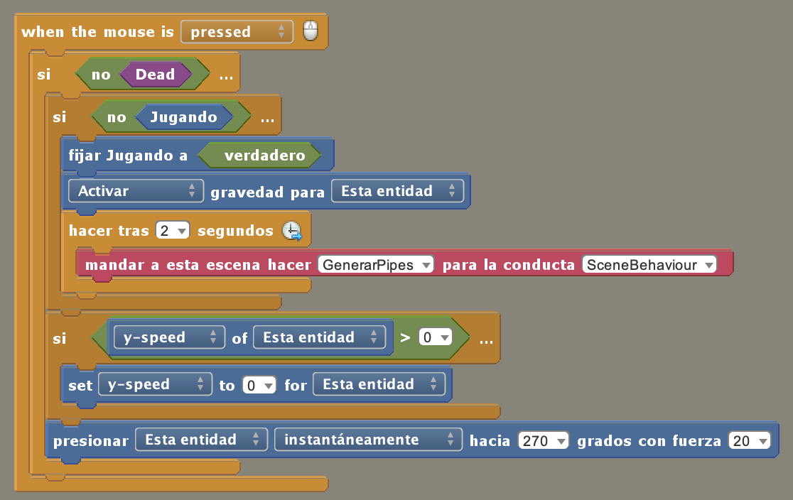
Evento Updated: Para que cuando suelto el click mira hacia abajo. Y siempre pondremos la posición X para que no se retrase a la hora de pasar entre las Pipes y haga el sonido siempre que este vivo.
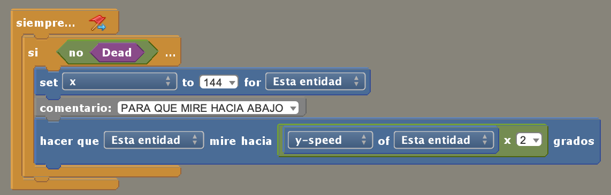
Tenemos que cargar la imagen de "Pipe.png" con una escala de 4. Tiene que tener 3 colisiones:
- Una colisión en cada Pipe para cuando choque el Flappy le quite 1 vida.
- Y una central para sumar puntos cuando el Flappy lo atraviese.
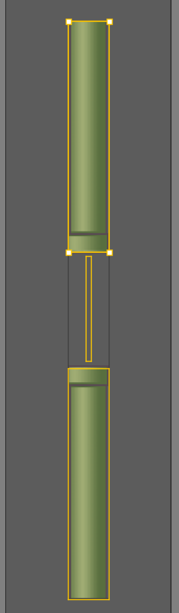
En la solapa de Física pondremos lo siguiente. Que no pueda ser empujado y que no rote.
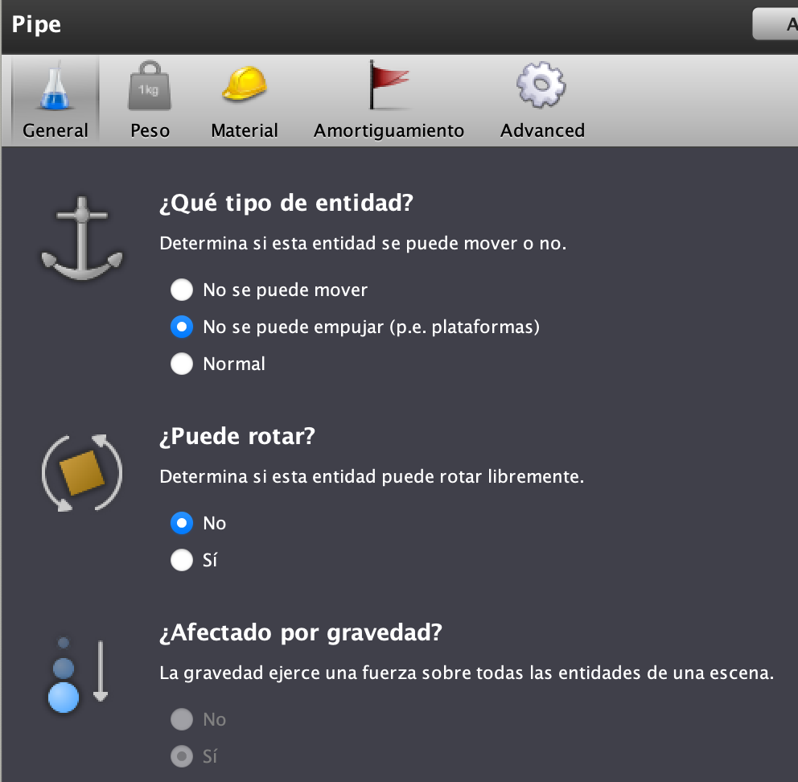
En Propiedades tenemos que poner a que grupo de colisión pertenece "Pipes". Y solo colisionara con el Flappy que pertenece al grupo de colisión de "Players".
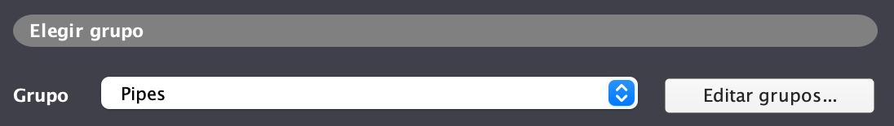
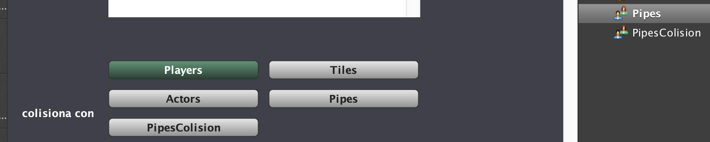
Necesitamos hacer otro grupo de colisión "PipesColision". Que se lo pondremos a la colisión que tenemos entre las Pipes para que sumemos los puntos. En la solapa de Colisión tenemos que seleccionar la colisión del medio y chequear "sensor" para que podamos atravesarlo.
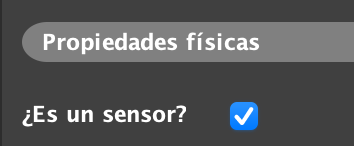
Una vez que ya tenemos el Pipe ya podemos hacer la llamada para "CrearPipes". Asi que creamos la conducta "SceneBehaviour" desde:
Central del juego/CONDUCTAS/Para escenas. Y hacemos un click en el botón y nos aparecera una ventana para poner el nombre de la conducta.
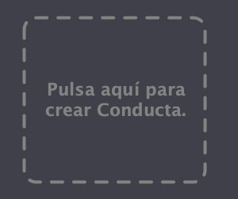
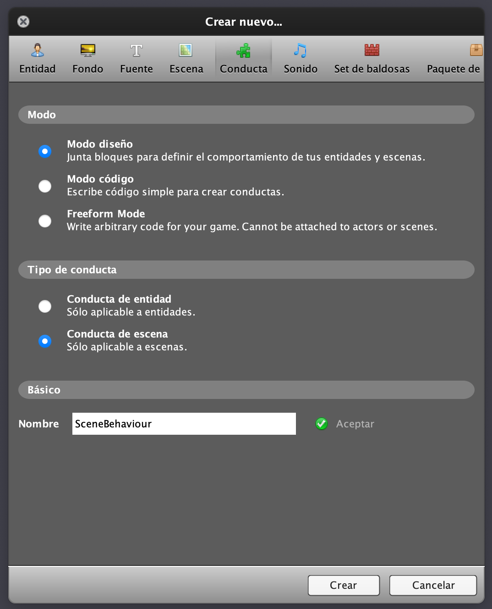
Tenemos que añadir está conducta a la Escena. Creamos un evento:
- Evento Advanced/Custom Event
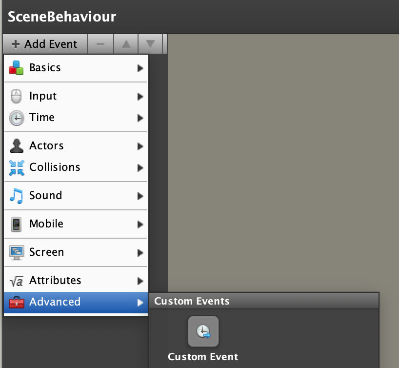
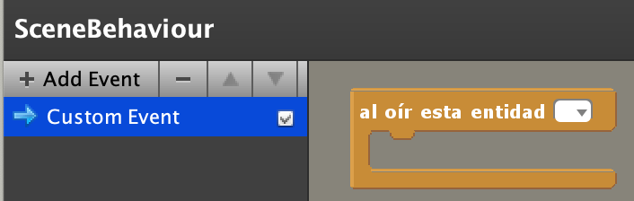
Pondremos el nombre "GenerarPipes". Se crearan a diferente altura aleatoriamente. Y se generara cada cierto tiempo.
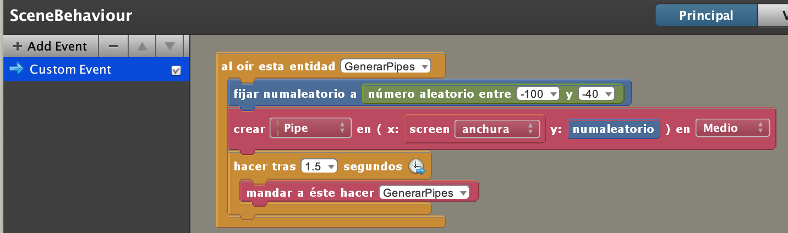
Las Pipes se tienen que mover hacia la izquierda. Para ello hacemos una nueva conducta de tipo entidad llamada "PipeBehaviour" que la
creamos desde: Central del juego/CONDUCTAS/Para entidades.
- Evento Created: Lo primero que haremos en esta conducta es:
- Que siempre se este moviendo la Pipe aunque no la vea.
- Que se cree por detrá para que aparezca por detrás del Ground.
- Le daremos una x-speed en negativo para que se mueva hacia la izquierda.
- Y crearemos un Atributo "Altura" para que se mueva hacia arriba y hacia abajo.
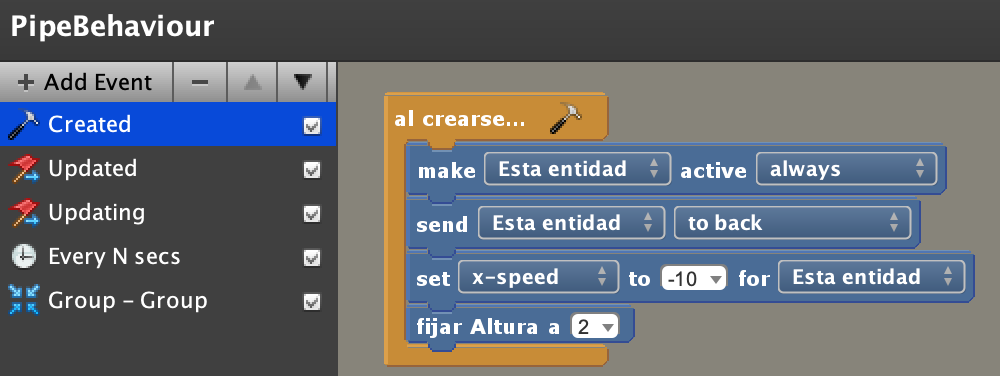
- Evento Update: Cuando llegan a una determinada posición o si está muerto se destruira la Pipe.
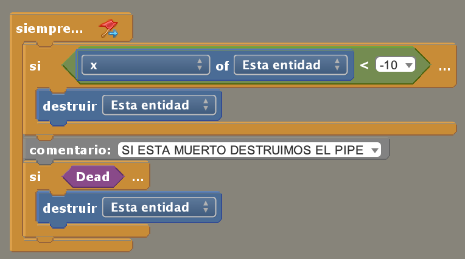
- Evento Update: Hacemos que este continuamente moviendose poniendo el Atributo "Altura".
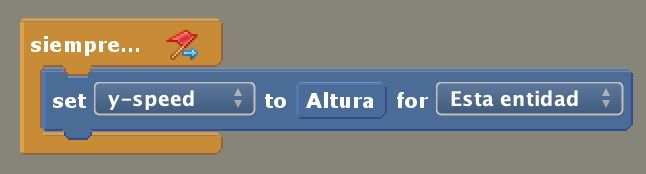
- Evento Every N secs: Cada cierto tiempo cambiara el atributo "Altura". Para que las Pipes se muevan de arriba abajo continuamente.
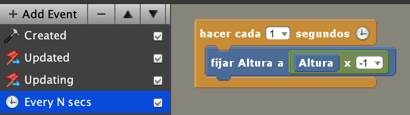
- Evento Group-Group: Cuando el grupo de colisión "PipeColision" colisiona con el grupo de colision "Players" que lo tiene el Flappy sumara puntos.
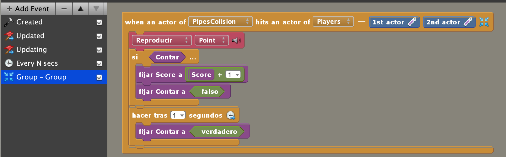
Nos faltaria hacer dos nuevas colisiones, uno sería con los "Pipes" y otro con "Actors" que es el Ground.
- Evento Group-Group: Colisión con Pipe
- Tenemos varios atributos "Dead" para saber si está muerto o no el Flappy y "Quitar Vida" para que solo me quite una vida
cada vez que toco a la Pipe ya que sigue tocando durante algún frame hasta que se destruye.
- Reproduciremos el sonido "Hit".
- Quitaremos 1 vida y si ya no tengo vidas el atributo "Dead" lo ponemos a verdadero y aparecerá la entidad "Game Over",
se destruye el Flappy y se para todo.
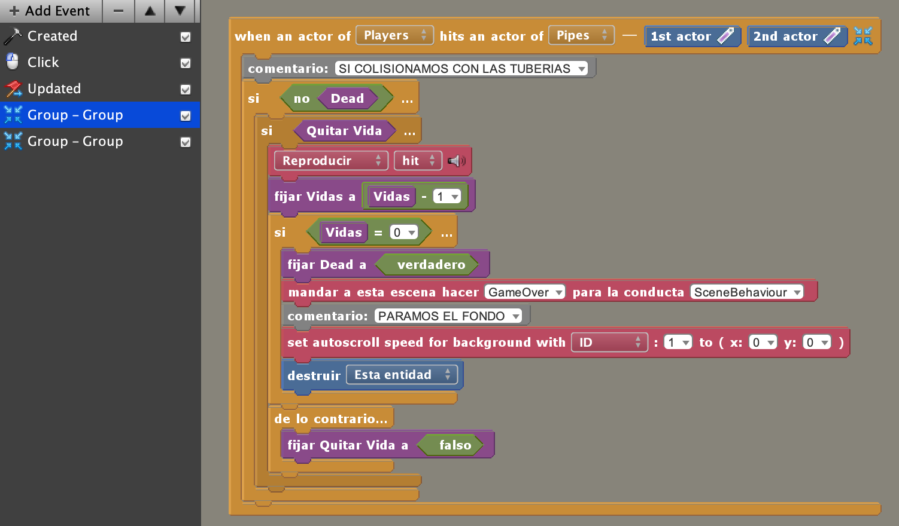
- Evento Group-Group: Colisión con Actors y haremos lo mismo que con la colisión anterior.
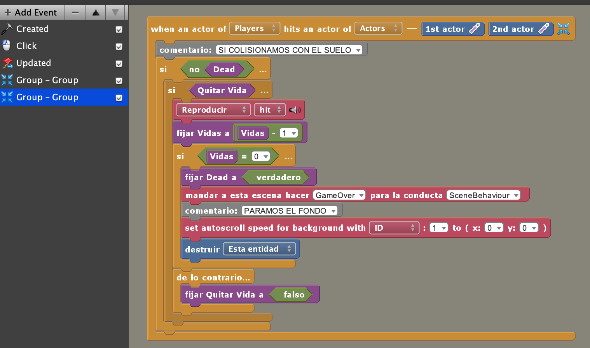
Tenemos que poner la colisión al Ground si no la tuviese.
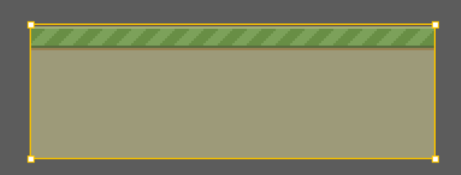
En la Solapa de Física pondremos que no pueda ser empujado y que no pueda rotar.
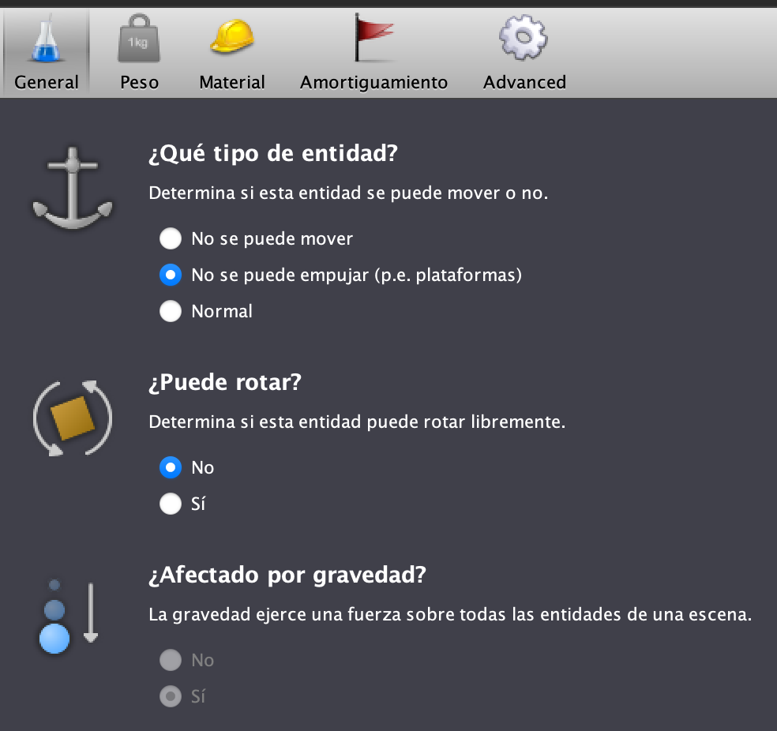
Y le ponemos a que grupo de colisión pertenece.
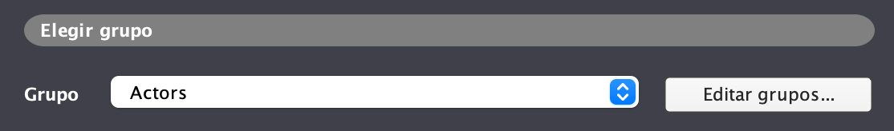
Nos faltaría crear su conducta "GroundBehaviour" para entidades y luego tenemos que añadirlo a Ground. Con dos Eventos:
- Evento Created: Haremos que siempre este activo para que se mueva aunque no lo veamos, que se mueva hacia la izquierda.
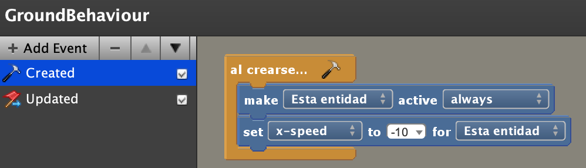
- Evento Updated: Si no está muerto y si el Ground llega a una determinada posición crearemos otro Ground. Y borraremos el anterior.
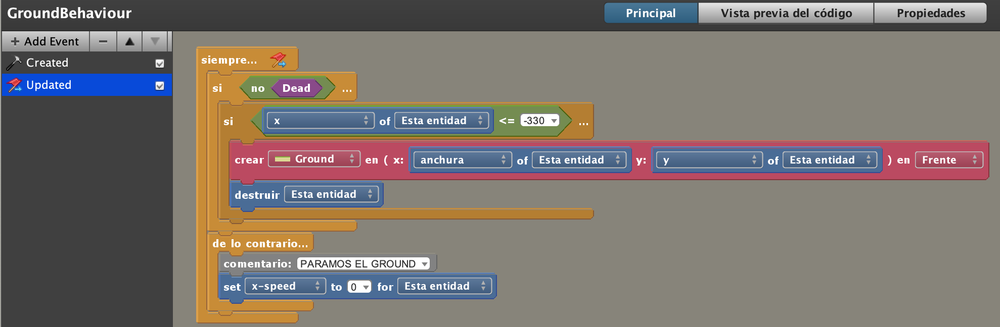
Para terminar esta conducta necesitamos varios Eventos:
- Evento Created: Usaremos un atributo del juego "Quitar Vida" que ya lo hemos usado en la conducta "BirdBehaviour".
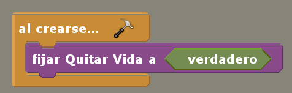
- Updated: Hacemos que desaparezca la con un color negro y vuelva aparecer cuando el atributo del juego "Quitar Vida" es falso.
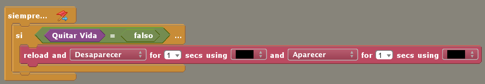
Se pueden poner otros efectos.
- Custom Event: Hacemos otro evento y lo llamamos "GameOver" para que la entidad Game Over y Play para volver a jugar. Centrandolo en la escena. Con ambas entidades se hace un slide.
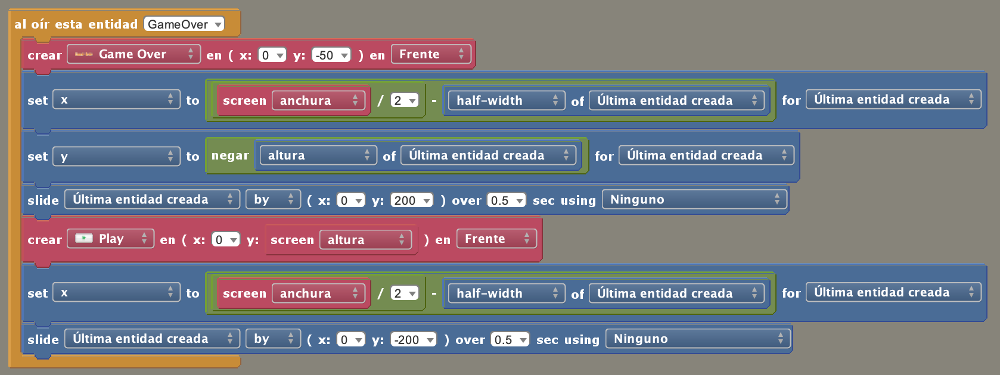
- Drawing: Ponemos en la escena las Vidas y los Puntos.
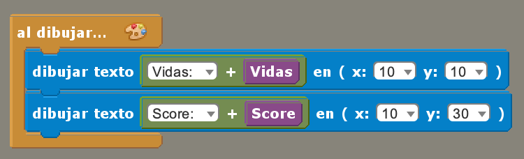
No hace falta que tenga colisiones. Para borrarla simplemente tenemos que entrar en la solapa de Colisiones y dar a retroceder
en el teclado y desaparecera. Y en la solapa de Fisícas no se podrá mover. Y pertenecera al grupo de las "Doodads" que no
puede colisionar con nada (Ya está definida en los Grupos de Colisión).
Tenemos que crear otra conducta "PlayBehaviour" que tendremos que asignarsela al botón de Play y tendrá un evento.
- Input/Universal/On Actor: Recarga la escena. Creamos de nuevo al Flappy e inicializamos variables.
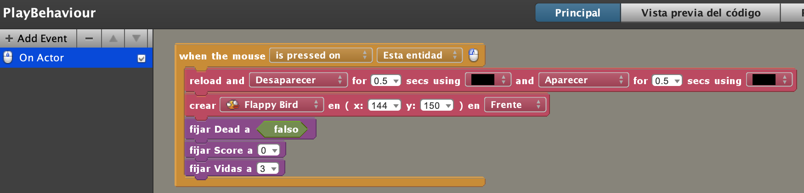